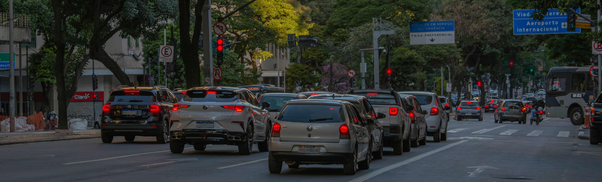

Atitudes transformam vidasA Semana Nacional do Trânsito acontece anualmente entre os dias 18 e 25 de setembro com o objetivo de conscientizar a população sobre a importância da segurança e do respeito nas vias públicas. Instituída pelo Código de Trânsito Brasileiro (CTB) em 1997, a campanha busca incentivar atitudes responsáveis entre motoristas, motociclistas, ciclistas e pedestres, destacando que todos partilham a responsabilidade por um ambiente seguro.
O trânsito faz parte da vida de todas as pessoas e está presente diariamente nos nossos deslocamentos. Apesar de ser um assunto abordado desde os primeiros anos de infância, o trânsito ainda é uma área que, devido à imprudência, transforma diariamente pessoas em vítimas. A falta de paciência, a pressa e o desrespeito à prioridade do outro fazem com que pequenas distrações se transformem em situações graves. Por isso, promover a educação e a empatia nas ruas é o único caminho eficiente para garantir o respeito às leis, melhorar a convivência coletiva e, acima de tudo, preservar vidas.